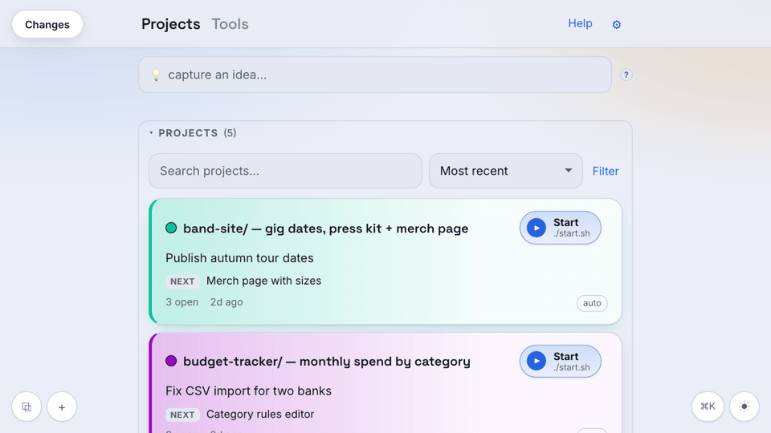
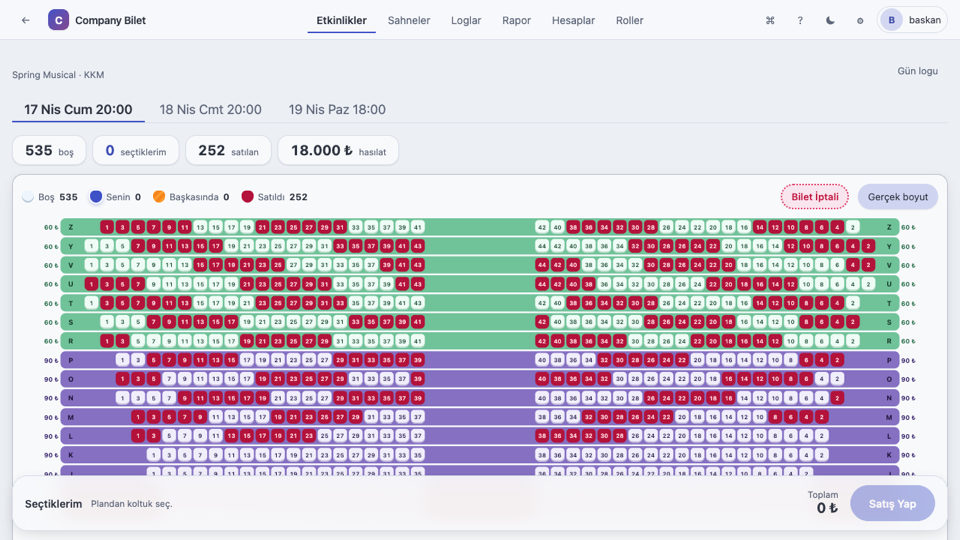
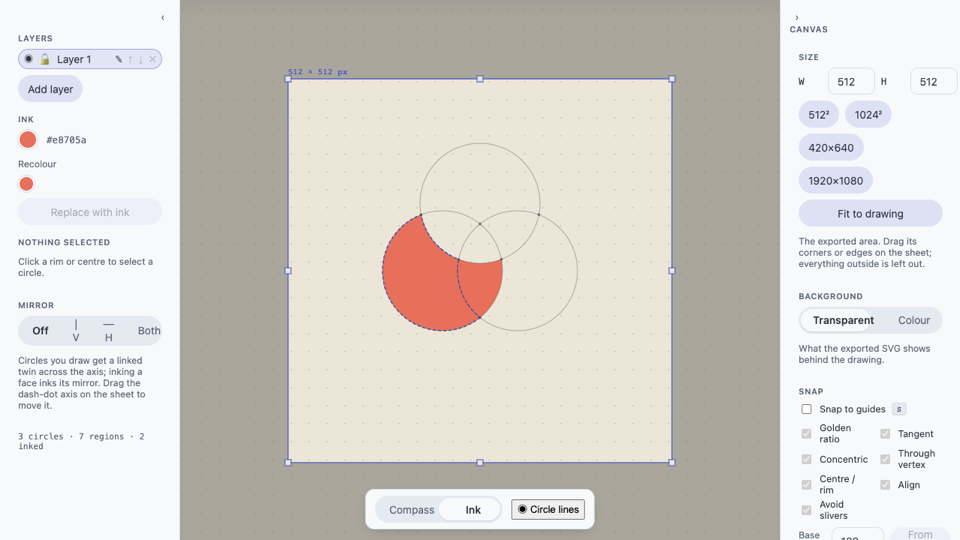
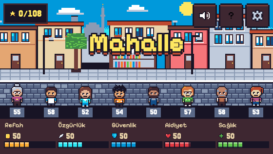
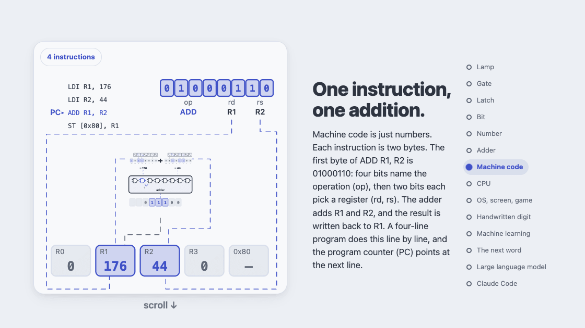
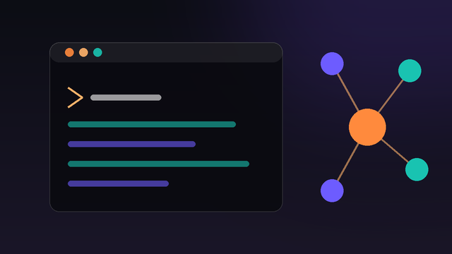
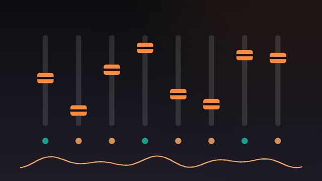
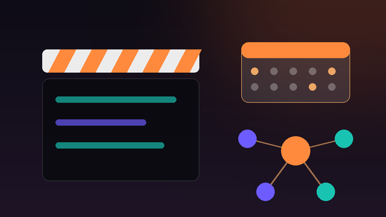
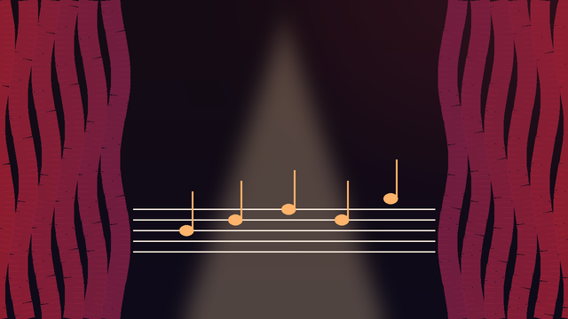

Projects

claude-pm-board ↗
A local board for running Claude Code across many projects, kept in plain Markdown files that you and your agents both read and write.

company_ticket ↗
Seat-map ticket sales for the ODTÜ Company musicals: sellers hold and sell seats live from a phone, with roles, per-show reports and backups.

pergel
Draft a logo with a compass: swing circles, ink the regions where they overlap, and export a clean true-arc SVG. Runs in the browser, nothing leaves your machine.

Way of Life: Rule a Neighbourhood
A pixel-art game: set the rules of a small Turkish neighbourhood and hear its eight residents react. 12 categories, 36 levels.

How Computers Work
An interactive Turkish/English explainer of how a computer works, built up from a battery and a lamp to a processor and a game.
Beyond work

Building with Claude Code
I use Claude Code to build whatever makes my life easier: an app that draws consistent, custom-styled charts and tables for my presentations, a notes and to-do app, a personal widget desktop, a Telegram assistant for my Mac, a ticketing site for university musicals. I run it like a small team: my own board hands backlog items to parallel agents, every project keeps its own rules and memory so nothing is explained twice, and nothing ships until its tests and browser checks pass.

Tonmeister & live sound
Since 2014 I've mixed and recorded orchestras, musical shows and bands as a freelancer. Away from the console I tinker with Raspberry Pi, Arduino and 3D printers.
Follow on Instagram ↗
Productions & events
I make music videos and run productions with crews of musicians, camera and sound people, and I organise events from the first call to the last cable. I'm the get-it-done person: if something's needed, I either do it or know who can. A wide network across music, theatre and tech makes that easy.

Musicals
Conducted a 16-piece orchestra for Big Fish (2022-23), music-directed Once (2019-20), Addams Family and Urinetown (2014-16), plus two self-written musicals.
Ekşi Değil Eksi
Turkish English, up-tempo disco funk cover band. Also produce cover videos.
Ekşi Değil Eksi on Instagram ↗Experience
Data Scientist · MigrosOne
Remote · via StartupHeroes
Details
- Build, deploy and maintain machine-learning models in production on AWS.
- Work across recommendation, forecasting and LLM-agent projects, end to end.
Graduate Researcher · HistoCan
Ankara, Turkey
Details
- Deep-learning segmentation and grading of cancerous tissue in histopathology slides; ran the AWS setup for datasets and distributed training.
Undergraduate Researcher · KOVAN Lab, METU
Details
- UR5 cobot motion-planning integration for the TÜBİTAK-funded Apprentice Project.
Intern · Vodafone GmbH
Details
- Smart Delivery prototype for 5G logistics in the Vodafone Innovation Park, Düsseldorf.
Intern · Arçelik
Details
- CI for a Ruby on Rails BI tool; automated AWS deployment tests.
Education
MSc Computer Engineering
METU · 2021–2024 · cGPA 3.80
Thesis: detecting cancer tissue grade from histopathology images with deep learning.
BSc Computer Engineering
METU · 2014–2020 · cGPA 3.29
Graduation project: GLaTeX, a LaTeX editor inside Google Docs.
Tools
Contact
Happy to chat, or to send you my CV on request. Just email me: